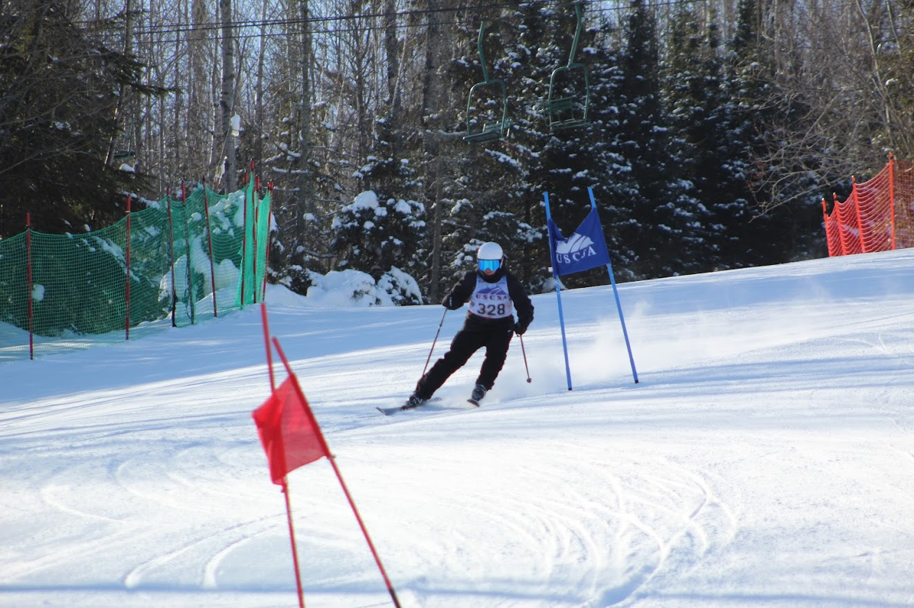
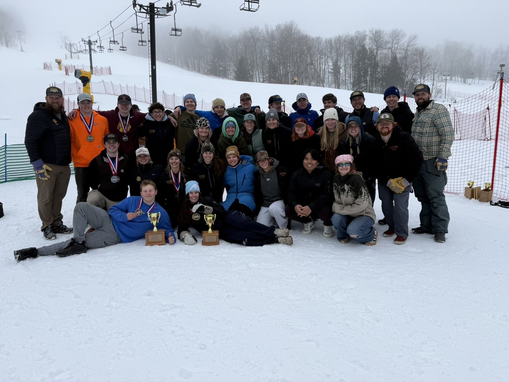

My Passions & Interests
Hobby #1 Skiing - Same as from Home page/h3>


I first got into skiing 2 years ago. i have always been facinated by it and when i finaly got the chance to try it with some friends, i decided why not and i did it. and now 2 years later i am a ski racer here are UMD!.
what i really love about skiing is how freeing it is. whenever i am on the snow i feel like i am free and that no one has control over me. all of my worries vanish and i am left truly enjoying what i am doing. throughout the 2 years i have been skiing i learned a lot about skiing.
Skiing has quickly become my favorite sport. skiing impacted my life by making me a happier person and allowed me to meet many new people i would have never met!. in the future i want to become a better skier as well as become a better ski racer.


I first got into skiing 2 years ago. i have always been facinated by it and when i finaly got the chance to try it with some friends, i decided why not and i did it. and now 2 years later i am a ski racer here are UMD!.
what i really love about skiing is how freeing it is. whenever i am on the snow i feel like i am free and that no one has control over me. all of my worries vanish and i am left truly enjoying what i am doing. throughout the 2 years i have been skiing i learned a lot about skiing.
Skiing has quickly become my favorite sport. skiing impacted my life by making me a happier person and allowed me to meet many new people i would have never met!. in the future i want to become a better skier as well as become a better ski racer.
Hobby #2 Badminton
![[Badminton]](images/badminton stock.jpg)
[even as a kid, i have always like badminton.when I found out that UMD had a badminton club i didnt hesitate at all when i joined it. i have always been competetive and badminton scratches that itch for me
it has been a few months since i have joined the UMD badminton club and i can really tell that i have become way better. i can now keep up with most people on the club. badminton is really challenging especieally when most poeple are really skilled. one memorable experience i have is finaly winning my first 1v1 match against some of the better people in the club.
badminton is a really fun way to achieve my life goal of being fit and athletic. the sport is definetly easy to learn but hard to master and the competitive side of me wants to become the best at it. i do plan to continue to play badminton in the future maybe even joining some competitive leagues in the future. What have you learned that applies to your career?]
.webp)